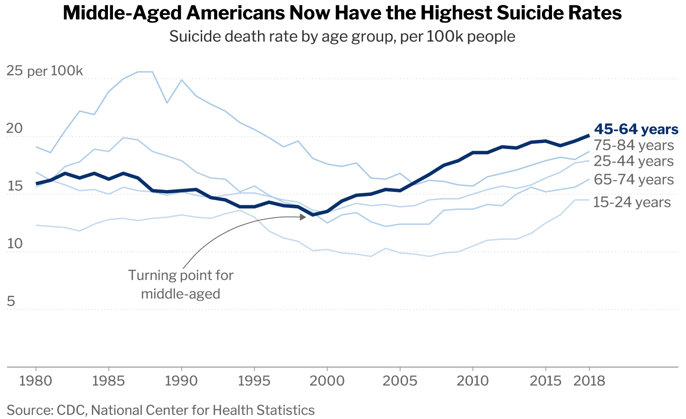
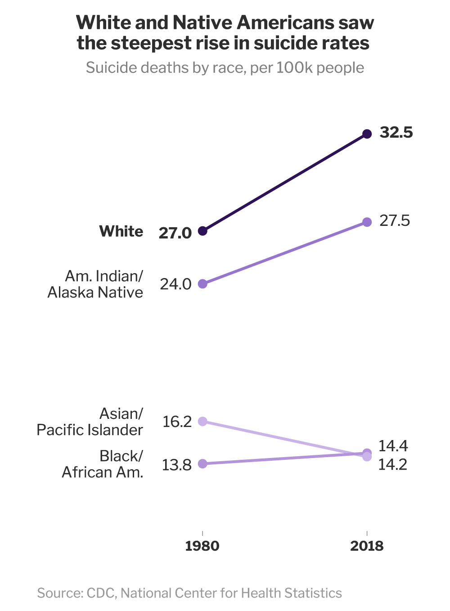
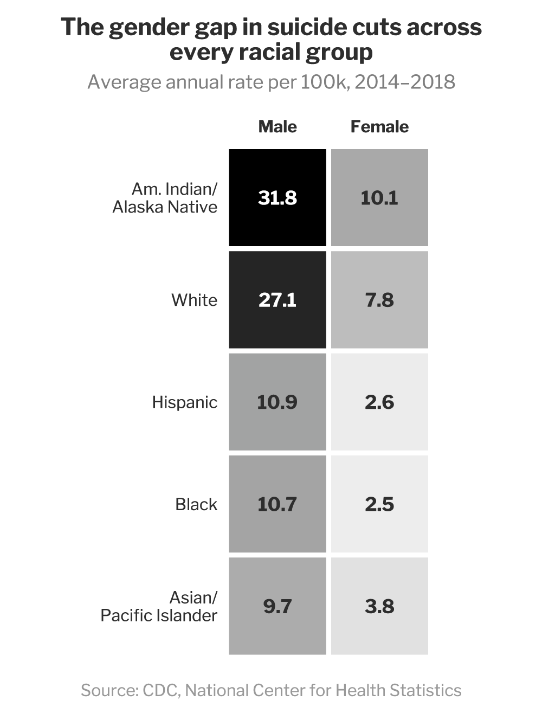

Most people who die by suicide don't really want to die. They want the pain to stop, the noise to quiet, the next morning to feel survivable.
Suicide isn't a calm, considered choice. It's a window - sometimes only minutes wide - where the weight of tomorrow eclipses the goodness of today, and a person forgets, just briefly, all the reasons to stay. Most of those reasons are still there in the morning. The person isn't.
When someone is diagnosed with cancer, they say it out loud. They post about treatment. But when someone is fighting a battle inside their own head, the room often goes quiet, afraid of being judged, afraid of being a burden, afraid that admitting to struggle somehow means weakness. Mental illness still carries the weight of a taboo that physical illness has long shed. Gen Z is breaking that silence faster than any generation before, but for our parents and grandparents, the words still don't come easily.
Suicide is the 11th leading cause of death in the United States.
Middle-aged Americans now carry the heaviest weight. Men between 40 and 60 sit at a particular convergence of pressures: the "sandwich generation" squeeze of caring for both children and aging parents, careers that have stalled or declined, divorce, financial fear, and a culture that still tells them to "tough it out." Many of them lack the deep social support systems that might catch them when they fall.

The turning point on this chart isn't a coincidence. The late 1990s marked the beginning of the opioid epidemic, when prescription painkillers began flooding American homes and reshaping how millions of people coped with pain, physical and otherwise. A few years later, the 2008 Great Recession hit. Suicide rates that had been stable for years began climbing. Stagnating wages, unemployment, and a thin social safety net left middle-aged Americans absorbing the worst of the economic pain. The line on this chart is not just a statistic. It's a generation absorbing shocks the country never fully addressed.
But age alone doesn't tell the whole story. Cultural background, how we're raised, and the communities we return to all shape how we cope when life cracks open.

White men, by contrast, have the highest suicide rates of any major demographic group in the U.S. The reasons stack on top of each other: access to highly lethal methods (firearms account for more than half of all U.S. suicide deaths), greater social isolation, deep reluctance to seek help, and rigid scripts of masculinity that demand self-reliance and discourage vulnerability. Economic shifts - the decline of manufacturing, the erosion of stable working-class jobs, have hit white men with lower educational attainment especially hard, fueling what researchers now call "deaths of despair," a category that combines suicide, drug overdose, and alcohol-related deaths. American Indian and Alaska Native communities have seen one of the steepest rises as well, reflecting compounded historical trauma, geographic isolation, and limited access to mental health care.
In Asian communities it's common to live with parents. That closeness shapes a person. The values passed down at the dinner table, the daily presence of family, the knowledge that you're going home to people who know you, it acts as a quiet brake. That doesn't mean Asian families don't struggle, or that Asian Americans don't face mental illness. But cultural cohesion, on average, gives people more friction before falling. Research suggests Asian Americans tend to have lower rates of prior suicide attempts and lower rates of alcohol and drug abuse, and that strong family cohesion has been cited as a protective factor in many communities.
Across every single racial group, men die by suicide far more often than women. Researchers call this the gender paradox: women actually attempt suicide more frequently, but men die more often. The gap comes down to method and culture.

Men are significantly more likely to use highly lethal means, which leave little room for intervention. Women more often use methods that allow more time for rescue. But the disparity isn't just mechanical. Traditional masculine norms emphasize strength, stoicism, and self-reliance, and they actively discourage men from naming what they feel or asking for help. Men are still often cast as the primary provider, so unemployment, financial collapse, or divorce can cause identity crises that go unspoken. Many mask depression with alcohol or substance use rather than seeking treatment, which raises impulsivity in moments of crisis.
Women, by contrast, tend to maintain stronger social and familial networks, and these connections often act as protective factors during the worst moments. Many women also describe a pull toward the people who depend on them - children, parents, family, that can be enough to hold them on this side of the line. That's not to say men don't think about their families too. They do. But the cultural weight men carry alone, without permission to set it down, is part of why the same silence that surrounds suicide in general lands heaviest on the people most likely to die from it.
By the time you finish reading this
Roughly one person somewhere in the world will have died by suicide. More than 200 today already. Over 349,000 this year. Globally, the number passes 720,000 every year.

Charts can show who, when, and how much. They cannot show the conversations that didn't happen, the calls that weren't made, the people who were smiling on the outside while fighting something no one around them could see.
Data set
Other sources and context
- Suicide — Wikipedia
- Suicide Statistics — National Institute of Mental Health
- Middle-aged men more likely to die by suicide — SSM Health
- Men and Suicide: Why are White Men Most at Risk? — Baton Rouge General
- Suicide research article — JAMA Network Open
- Why more men kill themselves than women — BBC Future
- Worldometers — Real-time world statistics